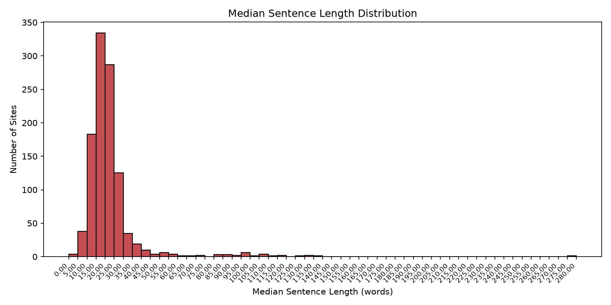
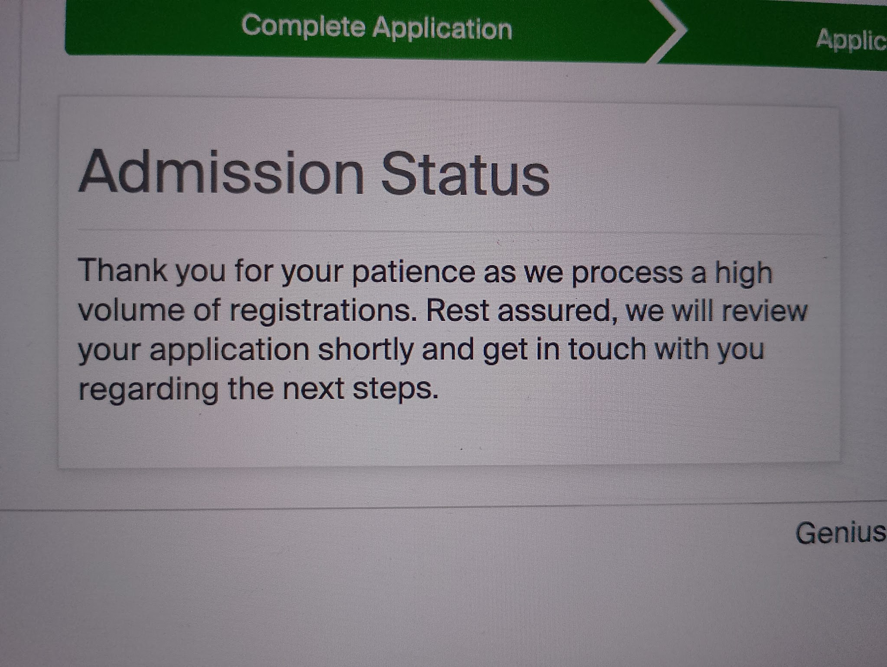
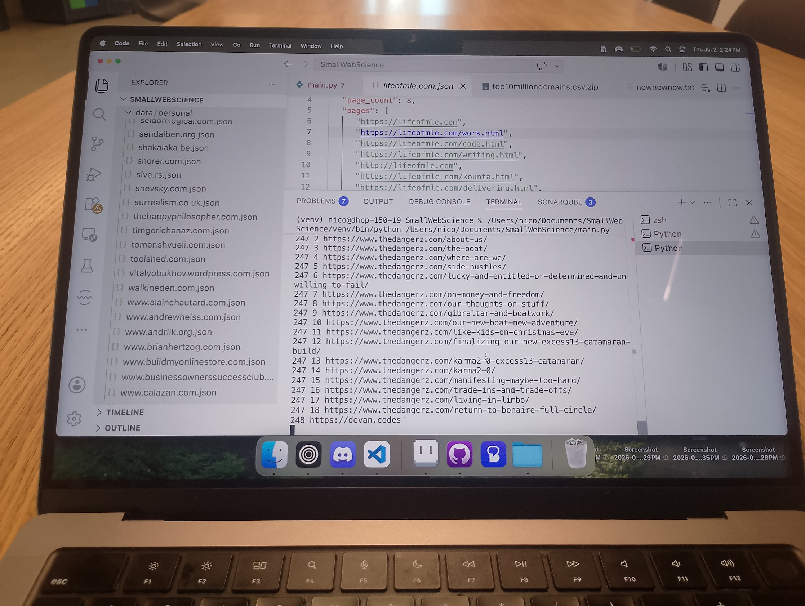

Daily
July 5th 2026
The websites with very long median sentence lengths were caused because the word counter was trying to interpret image files as text. I've fixed it now, but I do unfortunately need to run the whole thing again and pull all 1k websites. I'll make sure to make regular stops to check that all the data looks right.
July 4th 2026

Generated the first visualization of data for my peripheral web project. There seems to be something wrong in the way I'm counting words in a sentence, because there are a few websites that have a median sentence length of over 100 words...
July 3rd 2026

Registered to the last two highschool courses I need to take to enter the biology program. Grade 12 Chemistry and Grade 12 Biology, registered with TVO ILC.
July 2nd 2026

Still no internet today, so I am on campus assembling my dataset for my analysis on personal websites. I'm using the index from nownownow.com for personal websites, and top10million to get a list of commercial websites.
July 1st 2026
The internet is down at my house today, so I'm coding without any access to search. Currently working on the page you are looking at! (it's rather simple work, just some HTML and CSS)